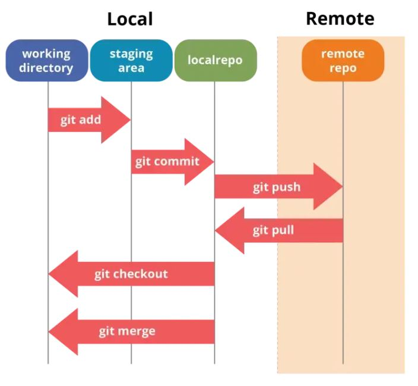

Gestion de version avec Git
Git est un outil de gestion version.
Version control systems provide you with three important capabilities:
Reversibility: the ability to back up to a previous state if you discover that some modification you did was a mistake or a bad idea.
Concurrency: the ability to have many people modifying the same collection of files knowing that conflicting modifications can be detected and resolved.
History: the ability to attach historical data to your data, such as explanatory comments about the intention behind each change to it. Even for a programmer working solo, change histories are an important aid to memory; for a multi-person project, they are a vitally important form of communication among developers.
— Git manual

Prérequis
- Installation de Git https://git-scm.com/downloads
- Création d'un compte sur https://github.com/
Configuration
Clone d'un dépot (en ligne -> local)
git clone https://github.com/InnovationLab-EFREIParis/Stage_1DOF_DroneBench.git
Initialisation du dépôt (création des fichiers nécessaires à git dans le dossier .git)
git init
Cette commande créait une suite de fichier dans le dossier caché .git Notamment le fichier .gitignore permettant de lister les fichiers ignorés par le gestionnaire de version
En local
ajout du fichier monfichier.txt à l'index
git add monfichier.txt
ajout de tous les fichiers encore non présents à l'index
git add .
retire le ficher monfichier.txt de l’index
git rm monfichier.txt
Sauvegarde en local de ma version, accompagné d’un message "Version 1"
git commit –m "Version 1"
Statut de la cohérence entre l’index, le dépôt local, et le dossier de travail
git status
Liste les fichiers modifiés entre origin (le depot originelement cloner, donc à distance) et l'index en local (la plupart du temps la branche local)
A faire seulement après git fetch
git diff origin master --name-only
Echange entre distant et local
Local vers distant
Transfert les commit du dépôt local vers le dépôt maitre (en ligne)
git push
Distant vers local
Télécharge le depot distant vers le dépôt local (Attention, cette opération ne met pas l'espace de travail à jour!)
git fetch
Met à jour l'espace de travail en y appliquant les modifications du dépôt local
git merge
Reviens à faire fetch suivie d'un merge
git pull